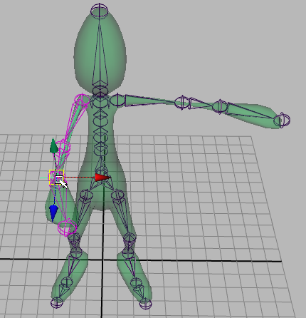

使用反向运动学 (IK)，可以移动 IK 控制柄，以设置整个关节链的姿势。IK 控制柄是一个可以选择并移动以影响其指定关节的对象。请参见 IK 控制柄概述。具有 IK 控制柄的关节链称为 IK 链。使用 IK 控制柄设置关节链的姿势和动画时，IK 解算器将自动旋转 IK 链中的所有关节。IK 解算器是指设置 IK 控制柄的位置时、Maya 用来计算 IK 链中所有关节的旋转的工具。请参见 IK 解算器。

对于目标定向的运动，反向运动学比正向运动学更直观，因为您可以重点关注关节链要达到的目标，而无需考虑链中的每个关节应如何旋转。
重要说明
- 如果关节已绑定（蒙皮）到模型，则无法在骨架中添加或移除它。如果确实需要执行该操作，则必须重做 IK 控制柄或蒙皮。
- 如果需要使用 IK 控制柄来设置关节链的姿势，则应避免创建以直线绘制的关节链。在插入 IK 控制柄之前在各种适当的角度处轻微地旋转关节链中的某些关节可使您更轻松地使用 IK 设置链的姿势。